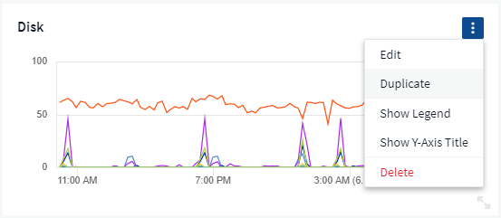
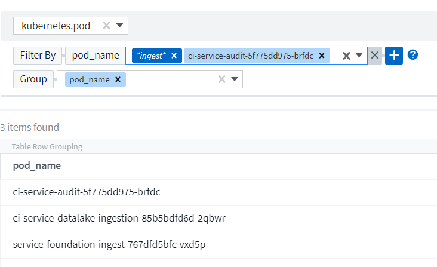
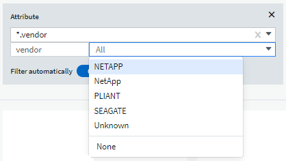
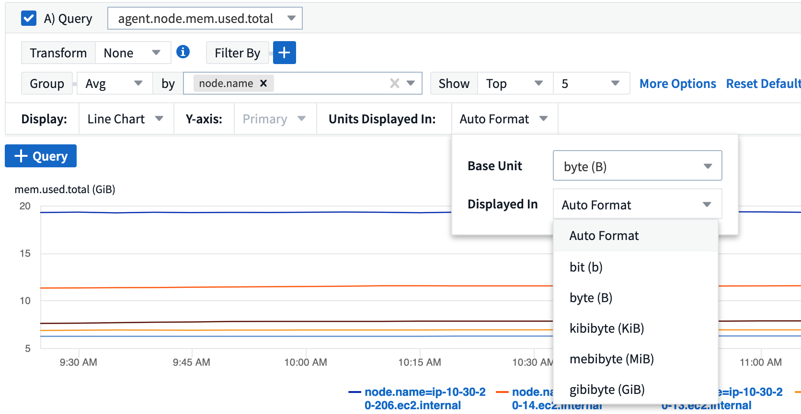

ドキュメントの変更をリクエスト
ドキュメントの変更をリクエスト GitHub で編集
GitHub で編集 寄稿者向けガイド
寄稿者向けガイドダッシュボードの機能
寄稿者
- ウィジェットの命名
- ウィジェットの配置とサイズ
- ウィジェットの複製
- ウィジェット凡例を表示します
- メトリックの変革
- ダッシュボードウィジェットのクエリとフィルタ
- グループ化と集約
- 上 / 下の結果を表示しています
- 表ウィジェットでのグループ化
- ダッシュボードの時間範囲セレクタ
- ウィジェットでのダッシュボード時間の無効化
- 第 1 軸と第 2 軸
- ウィジェットの式
- 変数（ variables ）
- ゲージウィジェットの書式設定
- 単一値ウィジェットのフォーマット
- データ表示の単位を選択します
- TV モードと自動更新
- ダッシュボードグループ
- お気に入りのダッシュボードをピン固定します
- ダークテーマ
- 折れ線グラフの補間
ダッシュボードとウィジェットでは、データの表示方法を柔軟に変更することができます。ここでは、カスタムダッシュボードを最大限に活用するのに役立つ概念をいくつか紹介します。
ウィジェットの命名
ウィジェットの名前は、最初のクエリで選択したオブジェクト、指標、または属性に基づいて自動的に付けられます。ウィジェットのグループ化も選択すると、「グループ化」属性が自動命名（集計方法とメトリック）に含まれます。

新しいオブジェクトまたはグループ化属性を選択すると、自動名称が更新されます。
自動ウィジェット名を使用しない場合は、単に新しい名前を入力します。
ウィジェットの配置とサイズ
ダッシュボードウィジェットは、それぞれのダッシュボードのニーズに応じて配置やサイジングを行うことができます。
ウィジェットの複製
ダッシュボード編集モードで、ウィジェットのメニューをクリックし、 * 複製 * を選択します。ウィジェットエディタが起動し、元のウィジェットの設定とウィジェット名に「 copy 」というサフィックスが付きます。必要な変更を簡単に加えて、新しいウィジェットを保存することができます。ウィジェットはダッシュボードの下部に配置され、必要に応じて配置することができます。すべての変更が完了したら、必ずダッシュボードを保存してください。

ウィジェット凡例を表示します
ダッシュボードのほとんどのウィジェットでは、凡例を表示または非表示にすることができます。ウィジェットの凡例の表示 / 非表示は、次のいずれかの方法で切り替えることができます。
-
ダッシュボードを表示するときは、ウィジェットの * オプション * ボタンをクリックし、メニューから * 凡例を表示 * を選択します。
ウィジェットに表示されるデータが変わると、そのウィジェットの凡例が動的に更新されます。
凡例が表示されているときに、凡例が示すアセットのランディングページにアクセス可能な場合は、凡例がそのアセットページへのリンクとして表示されます。凡例に「すべて」と表示されている場合は、リンクをクリックすると、ウィジェットの最初のクエリに対応するクエリページが表示されます。
メトリックの変革
Cloud Insights では、ウィジェット（具体的には「カスタム」または統合指標（ Kubernetes 、 ONTAP Advanced Data 、 Tegraf プラグインなど）の特定の指標に対してさまざまな * transform * オプションが提供されており、さまざまな方法でデータを表示できます。変換可能なメトリックをウィジェットに追加する場合は、ドロップダウンから次のトランスフォームの選択肢を選択できます。
- なし
-
データはそのまま表示され、操作は行われません。
- レート
-
現在の値を前回の観察以降の時間範囲で割った値。
- 累計
-
前の値と現在の値の合計の累積値。
- デルタ（ Delta ）
-
前回の観察値と現在の値の差。
- デルタレート
-
デルタ値を前回の観察からの時間範囲で割った値。
- 累積レート
-
累積値を前回の観察以降の時間範囲で割った値。
指標を変換しても、基盤となるデータ自体は変わりませんが、表示されるのはデータの表示方法だけです。
ダッシュボードウィジェットのクエリとフィルタ
クエリ
ダッシュボードウィジェットのクエリは、データ表示を管理するための強力なツールです。ここでは、ウィジェットのクエリに関する注意事項を示します。
一部のウィジェットでは、最大 5 つのクエリを設定できます。クエリごとに固有の折れ線などのグラフがウィジェットに出力されます。1 つのクエリに集計方法、グループ化、上位 / 下位などを設定しても、ウィジェットの他のクエリには影響しません。
目のアイコンをクリックすると、クエリが一時的に非表示になります。クエリの表示と非表示を切り替えると、ウィジェットに自動的に表示される情報が更新されます。これにより、ウィジェットの作成時に表示されるデータを個々のクエリで確認することができます。
次のタイプのウィジェットでは、複数のクエリを設定できます。
-
面グラフ
-
積み上げ面グラフ
-
折れ線グラフ
-
スプライングラフ
-
単一値ウィジェット
残りのタイプのウィジェットでは、クエリを 1 つだけ設定できます。
-
表
-
棒グラフ
-
ボックスプロット
-
散布図
ダッシュボードウィジェットのクエリでのフィルタリング
あなたのフィルターを最大限に活用するためにすることができるある事はここにある。
完全一致フィルタリング
フィルタ文字列を二重引用符で囲むと、 Insight では、最初と最後の引用符の間のすべての部分が完全に一致するものとして扱われます。引用符内の特殊文字または演算子は、リテラルとして扱われます。たとえば、「 * 」を指定した場合、リテラルアスタリスクである結果は返されますが、アスタリスクはワイルドカードとして扱われません。演算子 AND 、 OR 、および NOT は、二重引用符で囲まれた場合にもリテラル文字列として扱われます。
完全一致フィルタを使用して、ホスト名などの特定のリソースを検索できます。ホスト名「マーケティング」のみを検索し、「マーケティング 01 」、「マーケティングボストン」などを除外する場合は、名前「 marketing 」を二重引用符で囲みます。
ワイルドカードと式
クエリやダッシュボードウィジェットでテキストやリストの値をフィルタする場合、入力を開始すると、現在のテキストに基づいて * ワイルドカードフィルタ * を作成するオプションが表示されます。このオプションを選択すると、ワイルドカード式に一致するすべての結果が返されます。また、 NOT または OR を使用して *expressions * を作成することもできます。また、「 None 」オプションを選択して、フィールドで null 値をフィルタリングすることもできます。

ワイルドカードまたは式に基づくフィルタ（例 フィルタフィールドに濃い青で表示されます。リストから直接選択した項目は、水色で表示されます。

ワイルドカードおよび式フィルタリングは、テキストまたはリストでは機能しますが、数値、日付、またはブール値では機能しません。
先行入力を提案する高度なテキストフィルタリング
フィールドの値を選択すると、そのクエリの他のフィルタには、そのフィルタに関連する値が表示されます。たとえば ' 特定の object_Name_ にフィルタを設定した場合 'Model にフィルタを適用するフィールドには ' そのオブジェクト名に関連する値のみが表示されます
テキストフィルタのみで、コンテキストタイプアヘッド候補が表示されることに注意してください。日付、 Enum （ list ）などは先行入力候補を表示しません。つまり、列挙型フィールドにフィルタを設定し、他のテキストフィールドをコンテキストでフィルタリングすることができます。たとえば、データセンターなどの Enum フィールドの値を選択すると、他のフィルタにはそのデータセンターのモデル / 名前のみが表示されますが、逆の場合は表示されません。
選択した時間範囲には、フィルタに表示されたデータのコンテキストも表示されます。
フィルタの単位を選択します
フィルタフィールドに値を入力するときに、グラフに値を表示する単位を選択できます。たとえば、物理容量でフィルタして、 DEAFultGiB で表示するか、 TiB などの別の形式を選択できます。これは、ダッシュボードに TiB の値を示すグラフがいくつかあり、すべてのグラフで一貫した値を表示する場合に便利です。

その他のフィルタリングの詳細
フィルタをさらに絞り込むには、次のコマンドを使用します。
-
アスタリスクを使用すると、すべての項目を検索できます。例：
vol*rhel
「 vol 」で始まり、「 rhel 」で終わるすべてのリソースを表示します。
-
疑問符を使用すると、特定の数の文字を検索できます。例：
BOS-PRD??-S12
BOS-PRD12-S12_,BOS-PRD13-S12 などが表示されます。
-
OR 演算子を使用すると、複数のエンティティを指定できます。例：
FAS2240 OR CX600 OR FAS3270
複数のストレージモデルを検出します。
-
NOT 演算子を使用すると、検索結果からテキストを除外できます。例：
NOT EMC*
「 EMC 」で始まるものをすべて検索します。を使用できます
NOT *
値のないフィールドを表示します。
クエリとフィルタで返されるオブジェクトを特定する
クエリとフィルタで返されるオブジェクトは、次の図に示すようになります。「タグ」が割り当てられているオブジェクトはアノテーションであり、タグのないオブジェクトはパフォーマンスカウンタまたはオブジェクト属性です。

グループ化と集約
グループ化（ローリングアップ）
ウィジェットに表示されるデータは、取得中に収集されたデータポイントからグループ化（集計）されたものです。たとえば、ストレージ IOPS の経過を示す折れ線グラフでは、データセンターごとにグラフ線を表示してデータをすばやく比較できます。これらのデータをグループ化する方法はいくつかあります。
-
* Avg * ：収集されたデータの平均値として各行を表示します。
-
* 最大 * ：各行を基になるデータの maximum として表示します。
-
* 最小 * ：各行を基になるデータの minimum として表示します。
-
* 合計 * ：各行を基になるデータの SUM( 合計 ) として表示します。
-
* Count * ：指定した期間内にデータが報告されたオブジェクトの count_of を表示します。ダッシュボードの時間範囲（ダッシュボードの時間を上書きするように設定されている場合はウィジェットの時間範囲）または選択したカスタム時間ウィンドウ _ （ _Entire Time Window ）を選択できます。
グループ化方法を設定するには、次の手順を実行します。
-
ウィジェットのクエリで、アセットのタイプと指標（ Storage など）と指標（ Performance IOPS Total など）を選択します。
-
Group の場合は、集計方法（ Avg など）を選択し、データを集計する属性またはメトリックを選択します（例： Data Center ）。
ウィジェットが自動的に更新され、各データセンターのデータが表示されます。
また、基になるデータをグループ化してグラフや表にまとめることもできます。この場合は、ウィジェットのクエリごとに 1 つの線が表示されます。つまり、収集されたすべてのアセットについて、選択した指標または指標の平均、最小、最大、合計、または数が表示されます。
データが「すべて」でグループ化されているウィジェットの凡例をクリックすると、ウィジェットで使用されている最初のクエリの結果を示すクエリページが開きます。
クエリにフィルタを設定している場合は、フィルタされたデータに基づいてデータがグループ化されます。
ウィジェットを任意のフィールド（ Model など）でグループ化することを選択した場合でも、そのフィールドのデータをグラフまたは表に正しく表示するには、そのフィールドでフィルタ処理する必要があります。
データの集約
データポイントを分、時間、日などのバケットに集約して時系列のグラフ（行や領域など）をさらに調整し、そのデータを属性別（選択した場合）に集計することもできます。選択したインターバルの間に収集された Avg 、 Max 、 Min 、 Sum 、または _Last_data ポイントに基づいて、データポイントを集計することができます。集計方法を選択するには、ウィジェットの「クエリ」セクションで「その他のオプション」をクリックします。
インターバルを長くすると、「集計間隔にはデータポイントが多すぎる」という警告が表示されることがあります。間隔が短い場合は、ダッシュボードの期間を 7 日に延長するとこのように表示されることがあります。この場合、選択する期間がより短いほど、集約間隔は一時的に長くなります。
棒グラフウィジェットおよび単一値ウィジェットでデータを集約することもできます。
ほとんどのアセットカウンタは、デフォルトでは Avg に集約されます。一部のカウンタは、デフォルトで Max 、 Min 、または Sum_By に集計されます。たとえば、デフォルトでは、ポートエラーでアグリゲートは _sum に、ストレージ IOPS アグリゲートは _Avg になります。
上 / 下の結果を表示しています
グラフウィジェットでは、集計されたデータの「上位」または「 * 下位」の結果を表示したり、表示される結果の数をドロップダウンリストから選択したりできます。表ウィジェットでは、任意の列でソートできます。
グラフウィジェットの上位 / 下位表示機能
グラフウィジェットでは、特定の属性でデータを集計することを選択すると、上位または下位の結果を表示することができます。ただし、 _All_attributes で集計することを選択した場合は、上位または下位の結果を選択することはできません。
表示する結果を選択するには、クエリの * Show * フィールドで * Top * または * Bottom * を選択し、表示されるリストから値を選択します。
表ウィジェットにエントリが表示されます
表ウィジェットでは、表に表示する結果の数を選択できます。表では、いずれかの列を基準に結果を昇順または降順でオンデマンドでソートすることができるため、上位または下位の結果を表示するオプションはありません。
クエリの * エントリの表示 * フィールドから値を選択すると、ダッシュボードのテーブルに表示する結果の数を選択できます。
表ウィジェットでのグループ化
表ウィジェット内のデータは使用可能な属性別にグループ化できるため、データの概要だけでなく、データの詳細も確認できます。表内の指標が集計され、各行を折りたためば全体のデータが見やすくなります。
表ウィジェットでは、設定した属性に基づいてデータをグループ化できます。たとえば、ストレージ IOPS の合計を、それらのストレージが配置されているデータセンター別にグループ化できます。また、仮想マシンをホストしているハイパーバイザー別にグループ化して表示することもできます。リストで各グループを展開すると、そのグループのアセットが表示されます。
グループ化は表ウィジェットタイプでのみ使用できます。
グループ化の例（集計の説明を含む）
表ウィジェットでは、データをグループ化して見やすくすることができます。
この例では、すべての VM をデータセンター別にグループ化して表示する表を作成します。
-
ダッシュボードを作成または開き、 * 表 * ウィジェットを追加します。
-
このウィジェットのアセットタイプとして、 [Virtual Machine_] を選択します。
-
列 Selector をクリックし、 Hypervisor name_or_IOPS-Total を選択します。
表にこれらの列が表示されます。
-
IOPS がない VM は無視し、合計 IOPS が 1 を超える VM だけを表示するように設定します。[* Filter by * [+] * ] ボタンをクリックして、 [IOPS- Total _ ] を選択します。[on_any] をクリックし、 [ * 開始日 ] フィールドに * 1 * と入力します。[* から * ] フィールドは空のままにします。Enter キーを押し、フィルタフィールドをクリックしてフィルタを適用します。
これで、合計 IOPS が 1 以上の VM がすべて表示されます。この表にはグループ化はありません。すべての VM が表示されている。
-
[+]* でグループ化ボタンをクリックします。
表示されている任意の属性またはアノテーションでグループ化できます。1 つのグループ内のすべての VM を表示するには、 ALL を選択します。
パフォーマンス指標の列ヘッダーには、「 3 ドット」メニューが表示されます。このメニューには「 * 集計」オプションが含まれています。デフォルトの集計方法は Avg です。つまり、このグループに表示されている数値は、グループ内の各 VM の合計 IOPS の平均値です。この列を Avg 、 Sum 、 Min_or_Max で集計することを選択できます。表示された列のうち、パフォーマンス指標を含むものはいずれも、個別に集計できます。

-
[all] をクリックし、 [_Hypervisor name _] を選択します。
VM のリストがハイパーバイザーでグループ化されます。各ハイパーバイザーを展開すると、そのハイパーバイザーがホストしている VM を表示できます。
-
[ 保存（ Save ） ] をクリックして、テーブルをダッシュボードに保存します。ウィジェットは必要に応じてサイズ変更または移動できます。
-
保存 * をクリックしてダッシュボードを保存します。
パフォーマンスデータの集計
表ウィジェットにパフォーマンスデータの列（ iops-Total など）を含める場合は、データのグループ化を選択する際に、その列の集計方法を選択できます。デフォルトの集計方法では、グループ行の基になるデータの平均（ avg） が表示されます。データの合計値、最小値、最大値を表示することもできます。
ダッシュボードの時間範囲セレクタ
ダッシュボードデータの期間を選択できます。ダッシュボードのウィジェットには、選択した期間に関連するデータのみが表示されます。次の期間を選択できます。
-
最後の 15 分
-
過去 30 分
-
過去 60 分
-
過去 2 時間
-
過去 3 時間（デフォルト）
-
過去 6 時間
-
過去 12 時間
-
過去 24 時間
-
過去 2 日間
-
過去 3 日間
-
過去 7 日間
-
過去 30 日間
-
カスタムの期間
カスタム期間では、最大 31 日間連続で選択できます。この範囲に開始時間と終了時間を設定することもできます。デフォルトの開始時間は、最初に選択した日の午前 12 時、最後に選択した日のデフォルトの終了時間は午後 11 時 59 分です。* 適用 * をクリックすると、カスタムの時間範囲がダッシュボードに適用されます。
ウィジェットでのダッシュボード時間の無効化
メインのダッシュボードの期間設定をウィジェットごとに無効にすることができます。これらのウィジェットでは、ダッシュボードの期間ではなく、各ウィジェットに対して設定された期間に基づいてデータが表示されます。
ダッシュボードの時間をオーバーライドし、ウィジェットが独自の時間枠を使用するように設定するには、ウィジェットの編集モードで * ダッシュボードの時間 * を * オン * に上書き（チェックボックスをオンにします）を設定し、ウィジェットの時間範囲を選択します。* ウィジェットをダッシュボードに保存します。
ウィジェットには、ダッシュボードで選択した期間に関係なく、ウィジェットに対して設定された期間に従ってデータが表示されます。
ウィジェットに対して設定した期間は、ダッシュボード上の他のウィジェットには影響しません。
第 1 軸と第 2 軸
グラフに表示されるデータには、指標ごとに使用する測定単位が異なります。たとえば、 IOPS の測定単位は 1 秒あたりの I/O 処理数（ IO/s ）であるのに対し、レイテンシは単純に時間（ミリ秒、マイクロ秒、秒など）で測定されます。これらの両方の指標を、 Y 軸で 1 つの値セットを示す 1 つの折れ線グラフに出力すると、レイテンシの数値（通常は数ミリ秒単位）が IOPS （通常は数千単位）と同じ目盛りで表示されるため、レイテンシの線が見えなくなります。
ただし、一次（左側）の Y 軸に測定単位を 1 つ設定し、二次（右側）の Y 軸にもう一方の測定単位を設定することで、両方のデータセットをわかりやすい 1 つのグラフにまとめることができます。これで、個々の指標がそれぞれの目盛りで出力されます。
この例では、グラフウィジェットでの主軸と第 2 軸の概念を示します。
-
ダッシュボードを作成するか、開きます。折れ線グラフ、スプライングラフ、面グラフ、または積み上げ面グラフウィジェットをダッシュボードに追加します。
-
アセットのタイプ（例： Storage ）を選択し、最初の指標の iops-Total を選択します。必要なフィルタを設定し、必要に応じて集計方法を選択します。
折れ線グラフに IOPS の線が出力され、左側に目盛りが表示されます。
-
グラフに 2 行目を追加するには、 [+ クエリ ] をクリックします。この行では、メトリックの _Latency - Total _ を選択します。
グラフの下部にこの線が表示されます。これは、 IOPS の線と同じ目盛りで _ 描かれているためです。
-
レイテンシクエリで、 * Y 軸：セカンダリ * を選択します。
これで Latency の線が Latency 用の目盛りでグラフの右側に表示されます。

ウィジェットの式
ダッシュボードでは、任意の時系列ウィジェット（折れ線、スプライン、面、積み上げ面）、単一値、 または Gauge Widget を使用すると、選択した指標で式を作成し、それらの式の結果を 1 つのグラフに表示できます。次の例では、式を使用して特定の問題を解決します。最初の例は、環境内のすべてのストレージアセットの合計 IOPS に占める読み取り IOPS の割合を表示するウィジェットです。2 つ目の例では、環境内で発生した「システム」または「オーバーヘッド」の IOPS を可視化しています。これらの IOPS は、データの読み取りや書き込みから直接ではありません。
式で変数を使用できます（例： $var1 * 100 ）。
式の例：読み取り IOPS の割合
この例では、合計 IOPS に占める読み取り IOPS の割合をウィジェットに表示します。これは次の式と考えることができます。
Read Percentage = (Read IOPS / Total IOPS) x 100 このデータは、ダッシュボードに折れ線グラフで表示できます。これを行うには、次の手順を実行します。
-
新しいダッシュボードを作成するか、既存のダッシュボードを編集モードで開きます。
-
ダッシュボードにウィジェットを追加します。[* Area chart* （エリアグラフ * ） ] を
ウィジェットが編集モードで開きます。デフォルトでは、クエリは _IOPS-Total_For _Storage_Assets を表示します。必要に応じて、別のアセットタイプを選択します。
-
右側の [ 式に変換 ] リンクをクリックします。
現在のクエリが式モードに変換されます。式モードのときはアセットタイプを変更できません。式モードでは、リンクが * クエリに戻る * に変わります。いつでもクエリモードに切り替えるには、このボタンをクリックします。モードを切り替えるとフィールドがデフォルトにリセットされるので注意してください。
ここでは、式モードのままにします。
-
IOPS - 合計 * 指標がアルファベット変数フィールド「 * A * 」に追加されました。「 * b * 」変数フィールドで * Select * をクリックし、 * iops-Read * を選択します。
変数フィールドの後にある [+] ボタンをクリックすると、式に合計 5 つまでの英字変数を追加できます。IOPS 読み取りの割合の計算に必要なのは、合計 IOPS （「 * a * 」）と読み取り IOPS （「 * b * 」）のみです。
-
[Expression] フィールドでは、各変数に対応する文字を使用して式を作成します。読み取り IOPS の割合 = （読み取り IOPS / 合計 IOPS ） x 100 であることがわかっているので、次のように式を書きます。
(b / a) * 100 . *Label* フィールドは、式を識別します。ラベルを「 Read Percentage 」に変更するか、同様のわかりやすいものにします。 . [ 単位 *] フィールドを "%" または "percent" に変更します。
グラフに、選択したストレージデバイスの読み取り IOPS の割合が時系列で表示されます。必要に応じて、フィルタを設定するか、別の集計方法を選択できます。集計方法として [ 合計 ] を選択すると、すべてのパーセント値が一緒に追加され、 100% を超える可能性があることに注意してください。
-
グラフをダッシュボードに保存するには、 * 保存 * をクリックします。
折れ線グラフ、スプライングラフ、または積み上げ面グラフウィジェットで式を使用することもできます。
式の例：システム I/O
例 2 ：データソースから収集した指標の中には、読み取り IOPS 、書き込み IOPS 、合計 IOPS があります。ただし、データソースで報告される IOPS の合計数には、「システム」 IOPS が含まれていることがあります。これらは、データの読み取りや書き込みとは直接関係のない I/O 処理です。このシステム I/O はオーバーヘッド I/O と考えることもできますが、適切なシステム運用には必要ですが、データの運用には直接関係しているわけではありません。
これらのシステム I/O を表示するには、収集によって報告された合計 IOPS から読み取り IOPS と書き込み IOPS を差し引きます。式は次のようになります。
System IOPS = Total IOPS - (Read IOPS + Write IOPS) このデータは、ダッシュボードに折れ線グラフで表示できます。これを行うには、次の手順を実行します。
-
新しいダッシュボードを作成するか、既存のダッシュボードを編集モードで開きます。
-
ダッシュボードにウィジェットを追加します。「 * 線グラフ * 」を選択します。
ウィジェットが編集モードで開きます。デフォルトでは、クエリは _IOPS-Total_For _Storage_Assets を表示します。必要に応じて、別のアセットタイプを選択します。
-
[ 集計 ] フィールドで、 [ 合計 ] を [ すべて ] で選択します。
合計 IOPS の合計が線で表示されます。
-
[Duplicate this Query_icon] をクリックします
 クエリのコピーを作成するには、次の手順を実行します。
クエリのコピーを作成するには、次の手順を実行します。重複するクエリが元のクエリの下に追加されます。
-
2 番目のクエリで、 * 式に変換 * ボタンをクリックします。
現在のクエリが式モードに変換されます。いつでもクエリモードに切り替えるには、 [ クエリに戻る ] をクリックします。モードを切り替えるとフィールドがデフォルトにリセットされるので注意してください。
ここでは、式モードのままにします。
-
これで、 iops-Total_metric はアルファベット変数フィールド「 * A * 」に追加されました。[_IOPS] - [Total] をクリックして、 [IOPS-Read] に変更します。
-
「 * b * 」変数フィールドで、 * Select * をクリックし、 iops-Write. を選択します。
-
[Expression] フィールドでは、各変数に対応する文字を使用して式を作成します。ここでは、単純に次のように式を記述します。
a + b
[ 表示 ] セクションで、この式の [ グラフの領域 *] を選択します。
-
Label フィールドは、式を識別します。ラベルを「 System IOPS 」に変更するか、同様のわかりやすいものにします。
合計 IOPS の折れ線グラフが表示され、その下に読み取り IOPS と書き込み IOPS を組み合わせた面グラフが表示されます。この 2 つのグラフの間が、データの読み取り処理や書き込み処理に直接関係していない IOPS を表します。これらはシステムの IOPS です。
-
グラフをダッシュボードに保存するには、 * 保存 * をクリックします。
式で変数を使用するには、変数名（例： $var1 * 100 ）を入力します。式で使用できるのは数値変数のみです。
変数（ variables ）
変数を使用すると、ダッシュボードの一部またはすべてのウィジェットに表示するデータを一度に変更できます。1 つ以上原因のウィジェットで共通の変数を使用するように設定すると、 1 箇所で変更を加え、各ウィジェットに表示されるデータが自動的に更新されます。
ダッシュボードの変数にはいくつかの種類があり、さまざまなフィールドで使用できます。また、命名規則もあります。ここでは、これらの概念について説明します。
変数の型
変数には、次のタイプがあります。
-
* 属性 * ：オブジェクトの属性またはメトリックを使用してフィルタリングします
-
* 注釈 * ：事前定義されたを使用します "アノテーション" ウィジェットデータをフィルタリングします。
-
* Text * ：英数字の文字列。
-
* 数値 * ：数値。ウィジェットフィールドに応じて、単独で使用することも、「 From 」または「 To 」値として使用することもできます。
-
* Boolean * ： True / False 、 Yes / No などの値を持つフィールドに使用します。ブール変数の場合、選択肢は Yes 、 No 、 None 、 Any です。
-
* 日付 *: 日付値。ウィジェットの構成に応じて、「 From 」または「 To 」の値として使用します。

属性変数
属性タイプ変数を選択すると、指定した属性値を含むウィジェットデータをフィルタできます。次の例は、エージェントノードの空きメモリの傾向を表示する折れ線ウィジェットを示しています。エージェントノード IP の変数を作成しました。現在、すべての IP を表示するように設定されています。

ただし、環境内の個々のサブネット上のノードだけを一時的に表示する場合は、その変数を特定のエージェントノード IP または IP に設定または変更できます。ここでは、「 123 」サブネット上のノードのみを表示しています。

また、変数フィールドに「 vendor」 という属性を指定することにより、オブジェクトタイプに関係なく特定の属性で _all_objects をフィルタリングするように変数を設定することもできます。「 * 。」を入力する必要はありません。ワイルドカードオプションを選択した場合、 Cloud Insights はこれを指定します。

変数値の選択肢のリストをドロップダウンすると、その結果がフィルタリングされ、ダッシュボード上のオブジェクトに基づいて使用可能なベンダーのみが表示されます。

属性フィルタが関連するダッシュボードでウィジェットを編集すると（つまり、ウィジェットのオブジェクトに _*.vendor 属性 _ が含まれている）、属性フィルタが自動的に適用されていることがわかります。

変数の適用は、選択した属性データを変更するだけで簡単です。
アノテーション変数
アノテーション変数を選択すると、そのアノテーションに関連付けられているオブジェクト（同じデータセンターに属するオブジェクトなど）をフィルタできます。

テキスト、数値、日付、またはブール変数
特定の属性に関連付けられていない汎用変数を作成するには、 Text 、 Number 、 Boolean 、または Date_ の変数タイプを選択します。作成した変数は、ウィジェットフィルタフィールドで選択できます。ウィジェットでフィルタを設定する場合、フィルタに選択できる特定の値に加えて、ダッシュボード用に作成されたすべての変数がリストに表示されます。これらは、ドロップダウンの「変数」セクションの下にグループ化され、名前は「 $ 」で始まります。このフィルタで変数を選択すると、ダッシュボードの変数フィールドに入力した値を検索できます。フィルタでその変数を使用するウィジェットはすべて動的に更新されます。

変数フィルタスコープ（ Variable Filter Scope ）
アノテーション変数または属性変数をダッシュボードに追加すると、ダッシュボードの _ALL_widgets に変数を適用できるため、ダッシュボードのすべてのウィジェットで、変数に設定した値に基づいてフィルタされた結果が表示されます。

このように自動的にフィルタ処理できるのは属性変数とアノテーション変数だけです。Annotation または -Attribute 以外の変数は ' 自動的にフィルタできません個々のウィジェットで、これらのタイプの変数を使用するように設定する必要があります。
自動フィルタを無効にして、変数でウィジェットを設定したウィジェットのみを環境にするには、 [ 自動的にフィルタ ] スライダをクリックして無効にします。
個々のウィジェットで変数を設定するには、ウィジェットを編集モードで開き、 _Filter by_field で特定のアノテーションまたは属性を選択します。アノテーション変数では、特定の値を 1 つ以上選択するか、変数名（先頭の「 $ 」で示されます）を選択することで、ダッシュボードレベルで変数を入力できます。同じ環境属性変数変数を設定したウィジェットでのみ、フィルタされた結果が表示されます。
式で変数を使用するには、式の一部として変数名を入力します。たとえば、 $var1 * 100 と入力します。式で使用できるのは数値変数のみです。式では、数値アノテーション変数または属性変数は使用できません。
変数の命名規則
変数名：
-
a~z 、 0~9 の数字、ピリオド（ . ）、アンダースコア（ _ ）、およびスペース（ . ）のみを使用してください。
-
20 文字以下にする必要があります。
-
大文字と小文字が区別されます。 $CityName と $cityname は変数によって異なります。
-
既存の変数名と同じにすることはできません。
-
空にすることはできません。
ゲージウィジェットの書式設定
固体および箇条書きウィジェットでは、 Warning および / または _Critical_Levels のしきい値を設定し、指定したデータを明確に表現できます。

これらのウィジェットに書式を設定するには、次の手順を実行します。
-
しきい値より大きい値（ > ）を強調表示するか、しきい値より小さい値（ < ）を強調表示するかを選択します。この例では、しきい値レベル（ > ）より大きい値を強調表示します。
-
「警告」しきい値の値を選択します。このレベルより大きい値がウィジェットに表示される場合は、ゲージがオレンジで表示されます。
-
「クリティカル」しきい値の値を選択します。このレベルより大きい値原因を指定すると、ゲージが赤で表示されます。
必要に応じて、ゲージの最小値と最大値を選択できます。最小値を下回る値はゲージを表示しません。最大値を超えると、フルゲージが表示されます。最小値または最大値を選択しない場合は、ウィジェットの値に基づいて最適な最小値と最大値が選択されます。


単一値ウィジェットのフォーマット
単一値ウィジェットでは、警告（オレンジ）しきい値と重大（赤）しきい値の設定に加えて、「範囲内」（警告レベル未満）の値を緑または白の背景で表示するように選択できます。

単一値ウィジェットまたはゲージウィジェットのリンクをクリックすると、ウィジェットの最初のクエリに対応するクエリページが表示されます。
データ表示の単位を選択します
ダッシュボード上のほとんどのウィジェットでは、値を表示する単位を指定できます。たとえば、メガバイト _ 、 _ 千 _ 、 _ パーセント _ 、 _ ミリ秒（ ms ） _ 、 多くの場合、 Cloud Insights は取得されるデータに最適な形式を認識しています。最適な形式がわからない場合は、目的の形式を設定できます。
下の折れ線グラフの例では、ウィジェットに対して選択されたデータは BYTS( ベースの IEC データユニット : 下の表を参照 ) であることがわかっているため、ベースユニットは自動的に「バイト (B) 」として選択されます。ただし、データ値はギビバイト（ GiB ）として提供できるだけの十分な大きさであるため、 Cloud Insights ではデフォルトで値が GiB として自動的にフォーマットされます。グラフの Y 軸には表示単位が「 GiB 」と表示され、すべての値がその単位で表示されます。

グラフを別の単位で表示する場合は、値を表示する別の形式を選択できます。この例のベースユニットは _byte _ なので、ビット（ b ）、バイト（ B ）、キビバイト（ KiB ）、メビバイト（ MiB ）、ギビバイト（ GiB ）のいずれかの形式を選択できます。Y 軸ラベルと値は、選択した形式に応じて変更されます。

ベースユニットが不明な場合は、からユニットを割り当てることができます "使用可能な単位"をクリックするか、独自の情報を入力します。ベースユニットを割り当てたら、を選択して、サポートされている適切な形式のいずれかでデータを表示できます。

設定をクリアしてから、もう一度開始するには、 [* 初期設定にリセット * ] をクリックします。
オートフォーマットについての単語
ほとんどの指標は、最小単位のデータコレクタによって報告されます。たとえば、 1 、 234 、 567,890 バイトのような整数で報告されます。デフォルトでは、 Cloud Insights によって、読み取り可能な表示の値が自動的にフォーマットされます。たとえば、データ値 1,234,567,890 バイトは、自動的に 1.23_ギ ビバイトにフォーマットされます。メビバイト _ のように、別の形式で表示することもできます。それに応じて値が表示されます。

|
Cloud Insights では、アメリカ英語の番号命名基準を使用しています。米国の「 10 億」は「 1000 万」に相当します。 |
複数のクエリを使用するウィジェット
2 つのクエリを含む時系列ウィジェット（直線、スプライン、面、積み上げ面）があり、両方が主 Y 軸をプロットしている場合、ベースユニットは Y 軸の上部に表示されません。ただし、ウィジェットにプライマリ Y 軸に対するクエリとセカンダリ Y 軸に対するクエリがある場合は、それぞれのベースユニットが表示されます。

ウィジェットにクエリが 3 つ以上ある場合、ベースユニットは Y 軸に表示されません。
使用可能な単位
次の表は、カテゴリ別に使用可能なすべてのユニットを示しています。
* カテゴリ * |
* 単位 * |
通貨 |
セントドル |
データ（ IEC ） |
ビット・バイト・キビバイト・メビバイト・ギビバイト・テビバイト・ペビバイト・ビバイト・ビバイト・ビバイト・ビバイト・ビバイト・ビバイト・ビバイト・ビバイト |
データ速度（ IEC ） |
ビット / 秒バイト / 秒単位のキビバイト / 秒単位のメビバイト / 秒単位のティービバイト / 秒のペビバイト / 秒 |
データ ( メートル ) |
キロバイトギガバイトメガバイト 1 テラバイトエクサバイト |
データ速度（メートル単位） |
キロバイト / 秒メガバイト / 秒ギガバイト / 秒テラバイト / 秒ペタバイト / 秒エクサバイト / 秒 |
IEC |
キビメビギビテビオビエキセビ |
10 進数 |
8 億 2000 万個の規模を誇る |
割合 |
割合 |
時間 |
1 ミリ秒の 1 秒あたりのミリ秒の速度です |
温度 |
摂氏華氏 |
頻度 |
ヘルツキロヘルツギガヘルツ |
CPU |
ナノコアマイクロコア数百万コア数コア数メガコア数コア数小海岸数コア数 |
スループット |
1 秒あたりの処理数 / 秒要求数 / 秒読み取り数 / 秒書き込み数 / 秒処理数 / 分読み取り数 / 分 |
TV モードと自動更新
ダッシュボードおよびアセットランディングページのウィジェットのデータは、選択したダッシュボードの時間範囲（またはダッシュボードの時間を上書きするように設定されている場合は、ウィジェットの時間範囲）で設定された更新間隔に従って自動的に更新されます。更新間隔は、ウィジェットが時系列（折れ線、スプライン、面、積み上げ面グラフ）であるか非時系列（その他すべてのグラフ）であるかに基づいています。
ダッシュボードの時間範囲 |
時系列の更新間隔 |
非タイムシリーズ更新間隔 |
最後の 15 分 |
10 秒 |
1 分 |
過去 30 分 |
15 秒 |
1 分 |
過去 60 分 |
15 秒 |
1 分 |
過去 2 時間 |
30 秒 |
5 分 |
過去 3 時間 |
30 秒 |
5 分 |
過去 6 時間 |
1 分 |
5 分 |
過去 12 時間 |
5 分 |
10 分 |
過去 24 時間 |
5 分 |
10 分 |
過去 2 日間 |
10 分 |
10 分 |
過去 3 日間 |
15 分 |
15 分 |
過去 7 日間 |
1 時間 |
1 時間 |
過去 30 日間 |
2 時間 |
2 時間 |
各ウィジェットの右上に自動更新間隔が表示されます。
カスタムダッシュボードの期間では自動更新を使用できません。
-
TV モード * と組み合わせて使用すると、自動更新により、ダッシュボードまたはアセットページにほぼリアルタイムでデータを表示できます。テレビモードでは、すっきりとしたディスプレイが提供されます。ナビゲーションメニューは非表示になっており、編集ボタンと同様に、データ表示用の画面のスペースが増えます。TV モードは一般的な Cloud Insights タイムアウトを無視し、認証セキュリティプロトコルによって手動または自動でログアウトするまでディスプレイをライブ状態にします。
|
|
NetApp Cloud Central には 7 日間の独自のユーザログインタイムアウトがあるため、 Cloud Insights もそのイベントを使用してログアウトする必要があります。再度ログインするだけで、ダッシュボードは引き続き表示されます。 |
-
テレビモードを有効にするには、をクリックします
 ボタンを押します。
ボタンを押します。 -
TV モードを無効にするには、画面左上の * 終了 * ボタンをクリックします。

右上隅にある一時停止ボタンをクリックすると、自動更新を一時的に中断できます。一時停止中は、ダッシュボードの時間範囲フィールドに一時停止中のデータのアクティブな時間範囲が表示されます。自動更新が一時停止されている間も、データの取得と更新はまだ行われています。[ 再開 ] ボタンをクリックして、データの自動更新を続行します。

ダッシュボードグループ
グループ化を使用すると、関連するダッシュボードを表示および管理できます。たとえば、環境内のストレージ専用のダッシュボードグループを作成できます。ダッシュボードグループは、 [ ダッシュボード（ *Dashboards ） ]>[ すべてのダッシュボードを表示（ Show All Dashboards ） ] * ページで管理します。

デフォルトでは 2 つのグループが表示されます。
-
* すべてのダッシュボード * には、所有者に関係なく、作成されたすべてのダッシュボードが表示されます。
-
* My Dashboards * には、現在のユーザーが作成したダッシュボードのみが表示されます。
グループ名の横には、各グループに含まれるダッシュボードの数が表示されます。
新しいグループを作成するには、「 + 」「ダッシュボードグループの新規作成 * 」ボタンをクリックします。グループの名前を入力し、 * グループの作成 * をクリックします。空のグループがその名前で作成されます。
グループにダッシュボードを追加するには、 All Dashboards_group をクリックして、環境内のすべてのダッシュボードを表示します。所有しているダッシュボードのみを表示するには、 [Click _ My Dashboards] をクリックし、次のいずれかの操作を行います。
-
単一のダッシュボードを追加するには ' ダッシュボードの右側にあるメニューをクリックして ' グループに追加 (Add to Group_) を選択します
-
グループに複数のダッシュボードを追加するには、各ダッシュボードの横にあるチェックボックスをクリックしてダッシュボードを選択し、 * Bulk Actions * ボタンをクリックして、 _ グループに追加 _ を選択します。
[ グループから削除 ] を選択して ' 現在のグループからダッシュボードを削除する方法と同じ方法で ' 現在のグループからダッシュボードを削除しますダッシュボードは、 _All Dashboards_or_My Dashboards_group からは削除できません。
|
|
グループからダッシュボードを削除しても、 Cloud Insights からは削除されません。ダッシュボードを完全に削除するには ' ダッシュボードを選択して Delete( 削除 ) をクリックしますこれにより、そのグループが属していたすべてのグループから削除され、どのユーザもそのグループを使用できなくなります。 |
お気に入りのダッシュボードをピン固定します
お気に入りのダッシュボードをダッシュボードリストの一番上に固定することで、ダッシュボードをさらに管理することができます。ダッシュボードを固定するには、任意のリストのダッシュボード上にカーソルを置いたときに表示されるサムタックボタンをクリックします。
ダッシュボードのピン / ピン解除は ' ダッシュボードが属するグループに依存しない ' 個別のユーザー設定です

ダークテーマ
Cloud Insights は、明るいテーマ ( デフォルト ) を使用して表示することもできます。このテーマでは、ほとんどの画面が暗いテキストの背景を使用して表示され、暗い背景を使用してほとんどの画面が明るいテキストで表示されます。
明るいテーマと暗いテーマを切り替えるには、画面の右上にあるユーザ名ボタンをクリックし、目的のテーマを選択します。

ダークテーマのダッシュボードビュー：
ライトテーマダッシュボードビュー :
|
|
一部のウィジェットグラフなどの画面領域では、暗いテーマで表示しているときでも、背景が明るい場合があります。 |
折れ線グラフの補間
多くの場合、データコレクタがデータを異なる間隔でポーリングします。たとえば、データコレクタ A は 15 分ごとにポーリングし、データコレクタ B は 5 分ごとにポーリングします。折れ線グラフウィジェット（スプライングラフ、面グラフ、積み上げ面グラフも含む）で、複数のデータコレクタのこのデータを 1 行に集計している場合（たとえば、ウィジェットが「すべて」でグループ化されている場合）は、次のようになります。 また、 5 分ごとにデータを更新すると、コレクタ B からのデータが正確に表示され、コレクタ A からのデータにギャップが生じ、コレクタ A が再度ポーリングするまでアグリゲートに影響が及ぶ可能性があります。
この問題を軽減するために、 Cloud Insights は、データコレクタが再度ポーリングを行うまで、周囲のデータポイントを使用してデータの「最良の推測」を取得し、集約時にデータを補間します。ウィジェットのグループ化を調整することで、各データコレクタのオブジェクトデータをいつでも個別に表示できます。